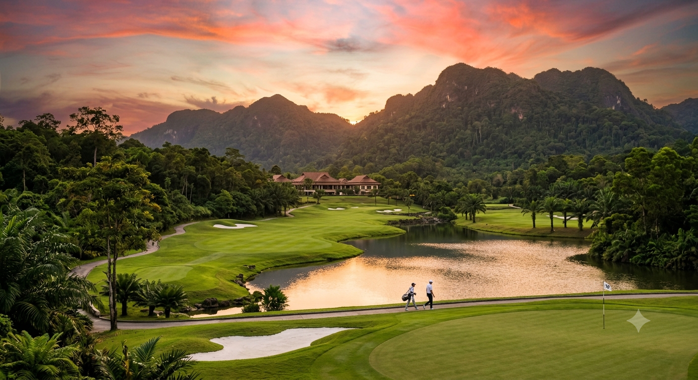
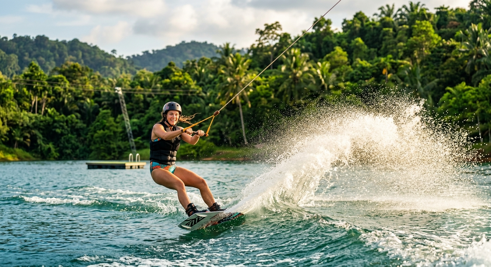
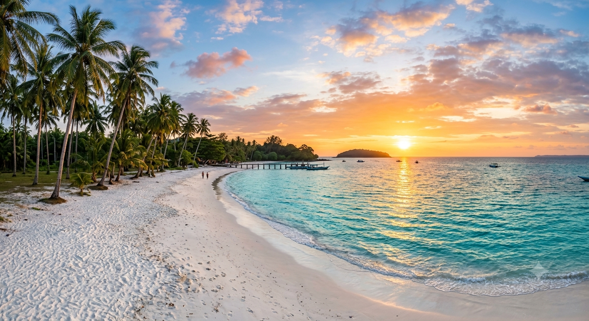

Riau Islands Archipelago
Where Batam's Energy Meets Bintan's Serenity
Batam's energy meets Bintan's serenity — two islands, one unforgettable escape, just a short ferry from Singapore.
Batam's energy meets Bintan's serenity — two islands, one unforgettable escape, just a short ferry from Singapore.
Riau Escapes was created for people who refuse to choose between adventure and relaxation, between urban sophistication and tropical wilderness. Batam pulses with cable wakeboarding, championship golf, sprawling malls, and seafood feasts on wooden kelong platforms above the ocean. Bintan whispers through golden sand dunes, ancient mangrove rivers alive with fireflies at dusk, and luxury villas built over turquoise lagoons so still they look painted. We have compiled every must-visit attraction, every championship golf course, every credible investment district across Batam and Bintan into one seamless guide.
Batam draws millions of visitors annually from Singapore and Malaysia, driven by its free-trade status, world-class wakeboarding parks, the iconic Barelang Bridge, and a culinary scene that stretches from hawker-style seafood at floating kelongs to five-star resort dining. Bintan attracts those seeking something deeper: the sheer scale of the Lagoi Bay crystal lagoon complex, Gurun Pasir's otherworldly sand dunes inside tropical rainforest, firefly rivers you can kayak through during the day and sit beneath at night when entire canopy rows ignite with bioluminescence.
And for the serious investor, both islands offer compelling narratives. Batam's FTZ incentives, Nagoya Hill office towers, Nongsa luxury villa developments, and Batam International Fairground are transforming the island from industrial zone to integrated township. Bintan's limited developable land, Ananda and Lagoi Bay resort ecosystems, and Jack Nicklaus–designed golf courses create scarcity that drives long-term appreciation.


Everything you need to explore, play, retire, or invest in Indonesia's most dynamically growing island region.

The Riau Islands are at the center of three powerful convergences happening simultaneously in Southeast Asia. First, Singapore's land shortage forces residents and businesses across the strait -- tens of thousands commute weekly via Batam Centre ferry terminal alone. This creates structural, unshakeable demand for commercial space, short-stay rentals, and leisure destinations.
Second, Indonesia's government-backed FTZ (Free Trade Zone) program has channelled billions into Batam and Bintan: new airport terminals, highway ring roads, deep-water port upgrades, and special economic zones offering 15-to-30-year corporate tax holidays. Every dollar spent on infrastructure raises adjacent land values by 15 to 30 percent within a two-year window.
Third, the luxury resort boom around Lagoi Bay (Bintan) and Nongsa (Batam) has attracted Fairmont, InterContinental, Angsana, and Ayana -- global brands that do not enter markets they do not believe will appreciate. Their presence is the investment community's strongest signal: long-term value growth is already priced in.
Golf enthusiasts from Singapore arrive every weekend for rounds at Palm Spring, Batam Hills, and Tamarin — courses that deliver exceptional green fees plus affordable food and drinks. The entire afternoon becomes an experience: morning round, seafood lunch at a floating kelong, driving range session as the sun sets.
Book your ferry from Singapore HarbourFront (departures every 30 minutes), pick your destination -- Batam's adrenaline or Bintan's serenity -- and discover why over 700,000 Singaporean visitors choose the Riau Islands annually.
Plan that Wednesday sit-down with PropNex. Tee off at Palm Spring next Saturday. Rent the kelong on Batam's eastern coast. The islands are waiting.
Start Exploring Now